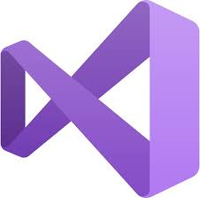
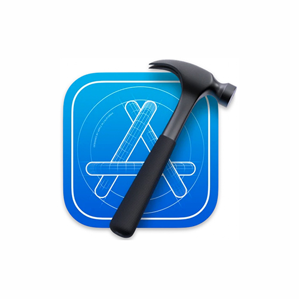
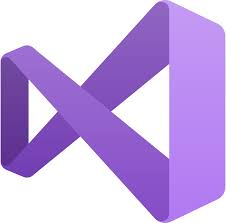
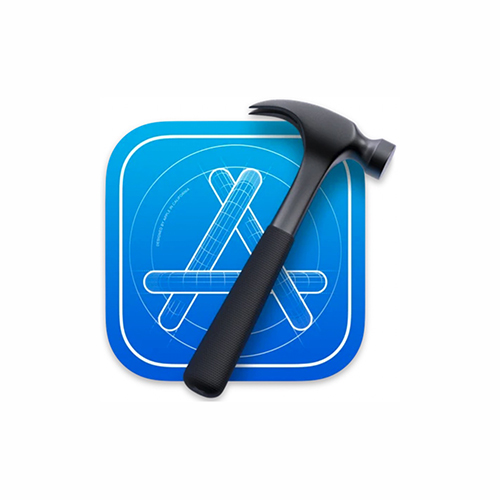

Jeg har jobbet med programmering og i flere ulike prosjekter både i skolen og hjemme. Jeg jobber både lage spill, lage Arduino enheter, lage sosiale medie apper og lage nettsider. Tillegg til det har jeg brukt flere ulike IDE som for eksempel: Visual Studio Code, Visual Studio med Unity, Arduino IDE og Xcode. Har brukt flere programmeringsspråk i de prosjektene for eksmepel JavaScript, C# og C++.

 



F21-Invaders er et spill jeg har lagd og utviklet, alt det du ser i spiller er laget av meg. Spillet er inspirert av Space-Invaders, det jeg har gjort er å bytte på tema og endret litt på hva man kan gjøre i spillet. Det er et highscore liste hvor du kan skrive inn ditt navn og konkurere mot dine venner for å få det høyeste highscoren. Det er max 8 navn highscore listen kan ha. Målgruppen er jo ungdommer for en god del av ungdommene er jo kjent med spille Space-Invader og at en god del av dagens ungdommer er avhengig av å spille spill.
Jeg har lagd flere små Arduino projsekter for å forstå konsepte med Arduino, og videre utvikle disse prosjektene.